分析输入(COM3/ASCII): 0916星扬上午.dat | 生成时间: 2026-09-17 19:23:53 | 分析工具: 北云 BEIYUN M21 Kinematic Analyzer
| 报文类型 | 数量 | 占比 |
|---|---|---|
| #INSPVAXA | 14876 | 9.4% |
| #BESTPOSA | 7438 | 4.7% |
| $GPGGA | 7438 | 4.7% |
| $GPGSV | 20224 | 12.8% |
| $GLGSV | 15977 | 10.1% |
| $GAGSV | 18485 | 11.7% |
| $GQGSV | 7370 | 4.7% |
| $GBGSV | 29224 | 18.5% |
| $GPGSA | 7424 | 4.7% |
| $GPGST | 7438 | 4.7% |
| #BESTGNSSPOSA | 7438 | 4.7% |
| #HEADINGA | 7438 | 4.7% |
| #TRACKSTATA | 7438 | 4.7% |
数据完整性: 158208 条有效报文 (原始 306968 行, 乱码残片 0 行, 二进制 0 行)
| 报文 | 条数 | 设定周期(s) | 实际周期(s) | 实际频率(Hz) | 估算丢帧率 | 状态 | 备注 |
|---|---|---|---|---|---|---|---|
| #BESTPOSA | 7438 | 1.000 | 0.200 | 5.00 | 0.0% | 提示 | 设定1.0s, 实测通常0.2s(输出更密); 该报文已不再使用, 仅信息提示 |
| #INSPVAXA | 14876 | 0.100 | 0.100 | 10.00 | 0.0% | 正常 | |
| $GPGGA | 7438 | 1.000 | 0.200 | 5.00 | 0.0% | 提示 | 设定1.0s, 实测通常0.2s(输出更密); 实际输出比设定更频繁, 不影响使用, 仅信息提示 |
| #BESTGNSSPOSA | 7438 | 0.200 | 0.200 | 5.00 | 0.0% | 正常 | |
| #HEADINGA | 7438 | 0.200 | 0.200 | 5.00 | 0.0% | 正常 | |
| $GPIMU | 148760 | 0.010 | - | - | - | 提示 | 按用户要求放弃处理, 仅计数显示 |
| $GPGSV | 20224 | 0.100 | - | - | - | 正常 | 无可用时间戳, 按报文插入规律推断(以实测数据为准) |
| $GPGSA | 7424 | 0.100 | - | - | - | 正常 | 无可用时间戳, 按报文插入规律推断(以实测数据为准) |
| $GPGST | 7438 | 0.100 | - | - | - | 正常 | 无可用时间戳, 按报文插入规律推断(以实测数据为准) |
| #TRACKSTATA | 7438 | 0.200 | 0.200 | 5.00 | 0.0% | 正常 |
注意: 标红/标黄项表示实际报文周期与设定周期可能不符或存在缺失, 请核对设备输出配置。
采样率分析: 5.00 Hz (平均间隔: 0.200 秒)
RTK链路: 基站ID 1793 (核对7240次) ／ 差分龄期 平均1.12s, 最大3.80s
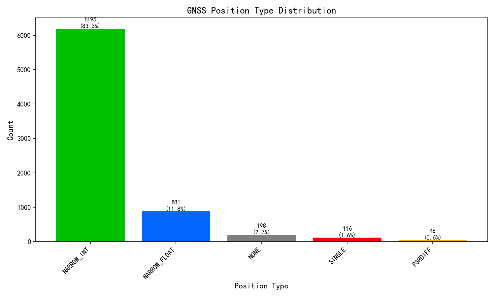
| 解类型 | 数量 | 占比 |
|---|---|---|
| NARROW_INT | 6195 | 83.3% |
| NARROW_FLOAT | 881 | 11.8% |
| NONE | 198 | 2.7% |
| SINGLE | 116 | 1.6% |
| PSRDIFF | 48 | 0.6% |
GNSS固定解比率: 83.3%
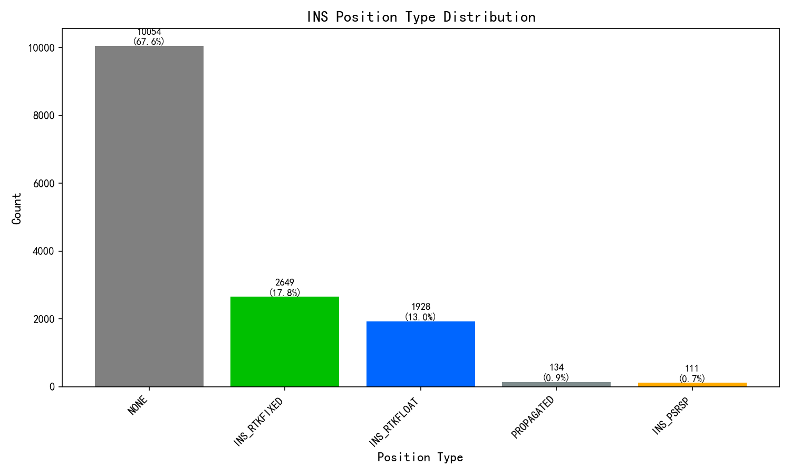
| 解类型 | 数量 | 占比 |
|---|---|---|
| NONE | 10054 | 67.6% |
| INS_RTKFIXED | 2649 | 17.8% |
| INS_RTKFLOAT | 1928 | 13.0% |
| PROPAGATED | 134 | 0.9% |
| INS_PSRSP | 111 | 0.7% |
INS固定解比率: 17.8%
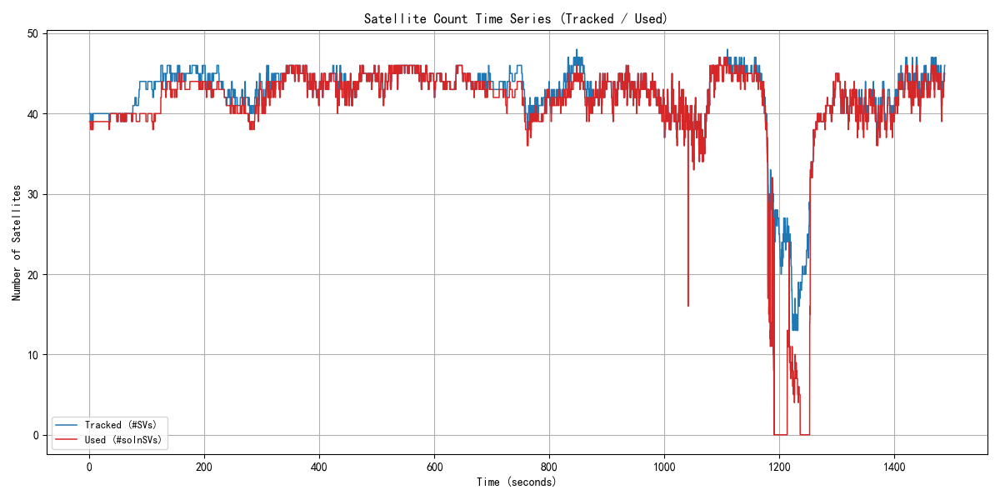
| 指标(口径依据UG016手册) | 数值(平均/最小/最大) |
|---|---|
| 跟踪卫星数 BESTGNSSPOSA #SVs"跟踪到的卫星数"(UG016 4.2.2 字段15) |
平均 42.1 / 最小 13 / 最大 48 |
| 可用卫星数 BESTGNSSPOSA #solnSVs"参与解算的卫星数"(UG016 4.2.2 字段16) |
平均 41.7 / 最小 4 / 最大 47 |
两层关系: 跟踪 ≥ 可用。跟踪为接收机已锁定跟踪的卫星, ' '可用为实际参与位置解算的卫星。口径依据 UG016 4.2.2 字段15/16。
数据源: $GPGSA(系统组合) ｜ DOP为接收机本地解算的几何精度因子(非卫星下发), 取决于卫星几何分布。
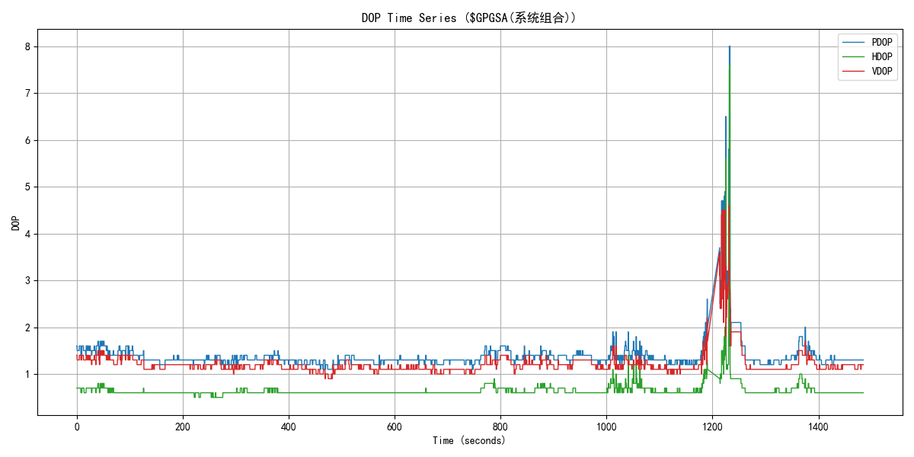
| 指标 | 数值 | 评估 |
|---|---|---|
| 平均PDOP | 1.38 | - |
| 最小PDOP | 1.10 | |
| 最大PDOP | 8.00 | |
| 平均HDOP | 0.65 | 优秀 |
| 最小HDOP | 0.50 | |
| 最大HDOP | 7.60 | |
| 平均VDOP | 1.21 | - |
| 最小VDOP | 0.90 | |
| 最大VDOP | 4.60 |
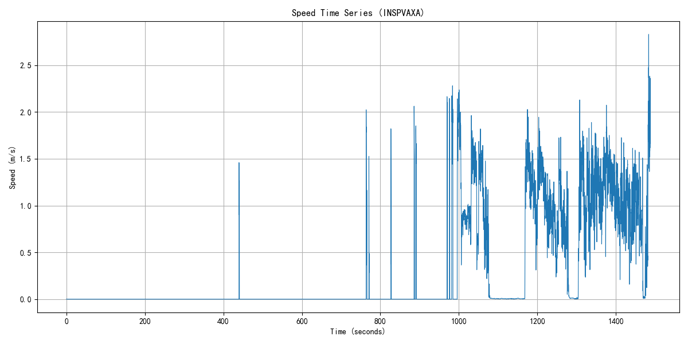
| 指标 | 数值 | 单位 |
|---|---|---|
| 平均速度 | 0.83 | m/s |
| 最大速度 | 2.83 | m/s |
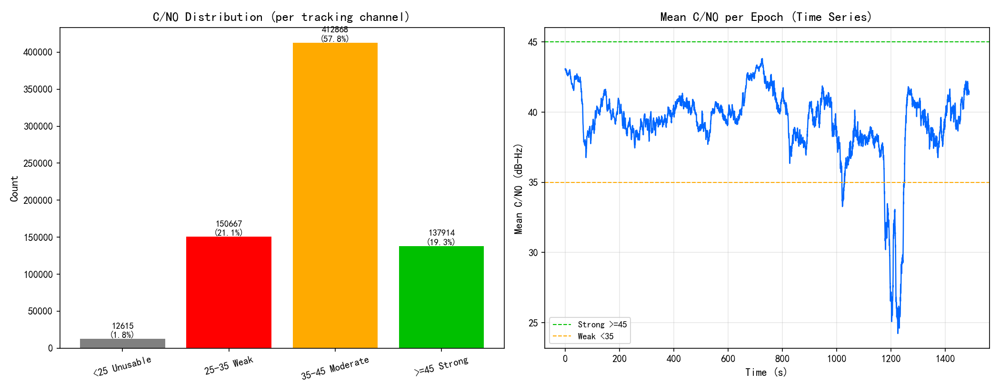
| 指标 | 数值 | 说明 |
|---|---|---|
| 数据来源 | TRACKSTATA | 通道跟踪状态, 逐跟踪通道给出载噪比, 及时性好 |
| 统计历元数 | 7438 | 参与统计的观测历元 |
| 观测值总数 | 714064 | 全部通道的C/N0样本数 |
| 平均C/N0 | 39.6 dB-Hz | 越高信号越好 |
| 中位数C/N0 | 41.2 dB-Hz | 抗离群值, 反映典型水平 |
| 范围 | 12 ~ 53 dB-Hz | 最低/最高观测值 |
| 低C/N0(<35)占比 | 22.9% | 占比越高遮挡/多路径越明显 |
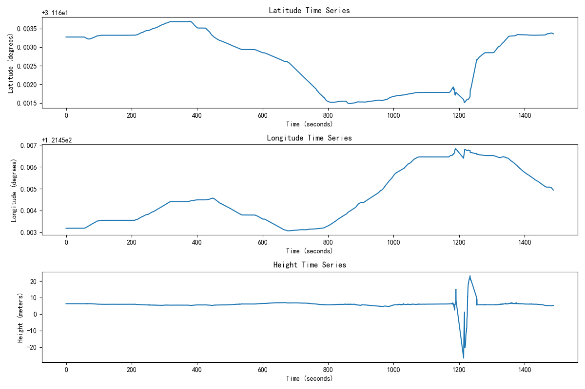
位置时间序列显示了接收机在Kinematic环境下的位置变化。从图中可以观察到位置的连续性和稳定性。
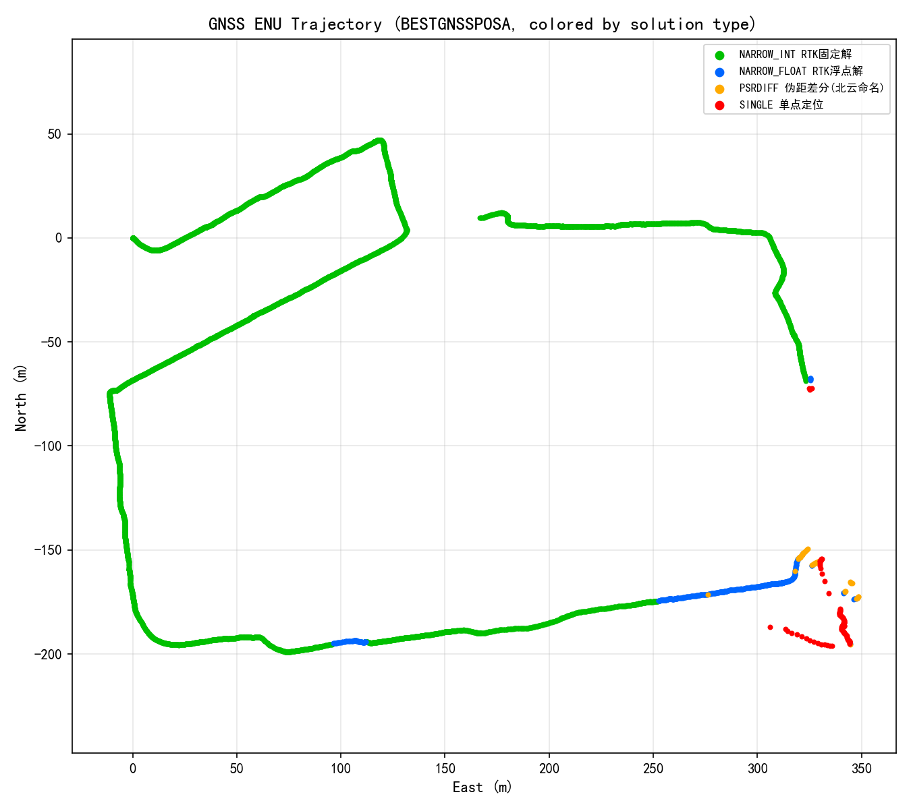
GNSS轨迹图使用ENU（East-North-Up）坐标系显示，按数据实际出现的解类型动态着色（本设备GNSS解类型见上分布图；不同产品命名可能有差异，如伪距差分北云称PSRDIFF、华测称SPPDIFF，含义相同）：绿色=RTK固定解(NARROW_INT)，蓝色=浮点解(NARROW_FLOAT)，红色=单点(SINGLE)，橙色=伪距差分(PSRDIFF/SPPDIFF)，紫色=PPP，灰色=无解(NONE)。图例中标注各类型数量及中文名。
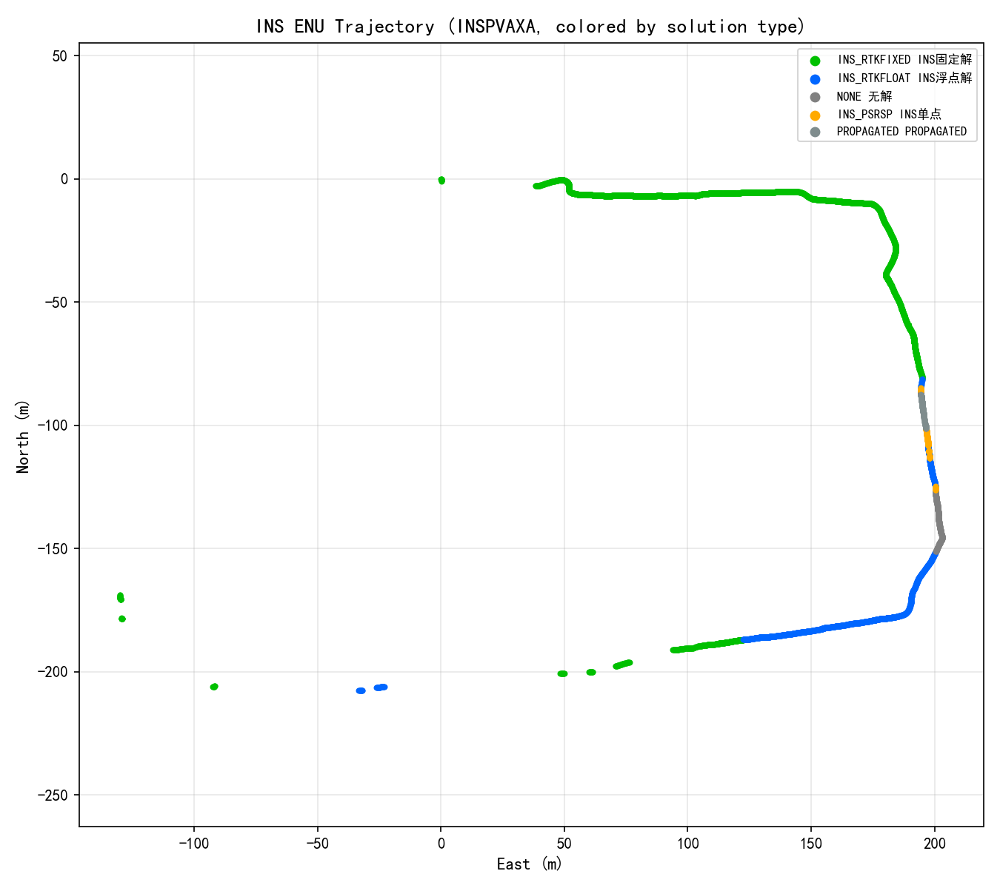
INS轨迹图使用ENU坐标系显示，组合惯导系统的定位轨迹。颜色对应：绿色(INS_RTKFIXED)、橙色(INS_RTKFLOAT)、蓝色(INS_PSRSP)、黄色(INS_PSRDIFF)、灰色(NONE)。
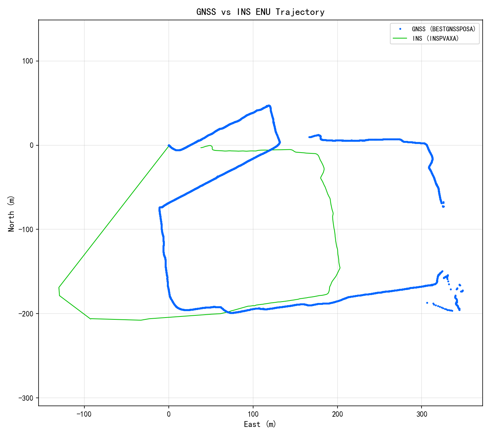
该图展示了GNSS纯定位轨迹（蓝色）与INS组合导航轨迹（红色）的叠加对比，可以分析两者之间的一致性和差异。
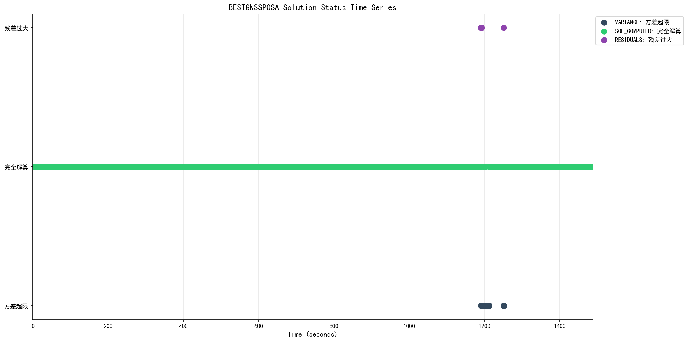
该图展示了BESTGNSSPOSA报文中解算状态（sol stat）的时间序列变化，帮助分析定位过程中解算状态的稳定性。
| 评估指标 | 状态 | 说明 |
|---|---|---|
| GNSS固定解比率 | warning | 83.3%，基本满足要求 |
| INS固定解比率 | fail | 17.8%，需要改善 |
| 卫星数(跟踪/参与解算) | pass | 平均跟踪42.1颗，平均参与解算41.7颗，良好 |
| DOP值 | pass | 平均HDOP 0.65，优秀 |
以下为该设备特有的字段/能力评估, 每项附"测什么·怎么算好·怎么算坏"注释及依据。
| 特色指标 | 实测值 | 状态 | 评级 | 注释(判断动态的什么/好坏) | 依据 |
|---|---|---|---|---|---|
| 载体姿态 | 横滚3.34° 俯仰-0.04° 航向263.26° | 提示 | 组合惯导特色: 实时输出Kinematic载体姿态(横滚/俯仰/航向)。纯GNSS无此能力。姿态连续性反映惯导跟踪状态。 | 北云UG016 INSPVAX字段 | |
| 水平位置精度σ | 0.056 m | 警告 | 组合惯导特色: 位置标准差(接收机自估)。<=0.02m厘米级, 0.02~0.1m分米级, >0.1m米级。 | 北云UG016 INSPVAX字段(阈值为工程经验) | |
| 航向角精度σ | 0.328 deg | 警告 | 组合惯导特色: 航向角标准差, 判断姿态收敛。<=0.1deg高, 0.1~0.5一般, >0.5发散。 | 北云UG016 INSPVAX字段(阈值为工程经验) |